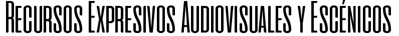
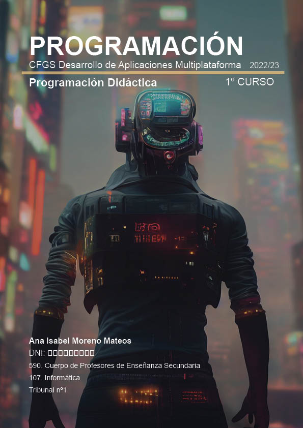
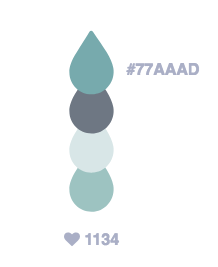
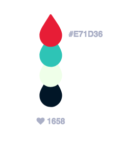
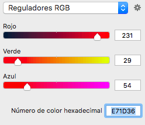
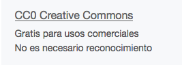
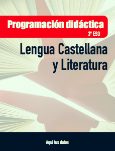

3 TIPS para Diseñar Portadas Bonitas para tu Programación Didáctica
El diseño de la portada de una programación didáctica puede ser un proceso complicado si no sabes o no se te da bien el diseño. Pero muchas veces subestimamos nuestra capacidad. ¿Quieres saber cómo puedes hacer una portada profesional para tu programación didáctica sin tener ni idea de diseño? En este artículo te damos 3 sencillos pasos para crear tu portada en menos de 10 minutos ¡Empieza a leer!
1. Tipo de letra ‘sans serif’ para la portada de la programación didáctica
Al trabajar en cualquier procesador de textos, podemos elegir entre multitiud de tipografías la que más nos guste o la más adecuada para el texto. En el caso de una programación didáctica para oposiciones, debemos dejar a un lado nuestras preferencias para centrarlo en lo estético y, a la vez, práctico. Queremos una portada llamativa, que dé la información necesaria de un solo vistazo, que sea fácil de leer y quede en la mente del tribunal. Si al comenzar tu exposición o defensa, los miembros del tribunal te asocian con la imagen de tu portada, ya estás destacando entre los demás (porque no todo el mundo hace una portada vistosa).
Así que, el primer paso para destacar es elegir una tipografía. Para ello, puedes elegir entre las predeterminadas de tu procesador de texto. Pero si quieres explorar nuevas opciones, puedes visitar dafont.com, todo un referente de tipografías. En el menú de arriba, ve al apartado Sans serif ¡y escoge la que prefieras! ¿Cuál crees que se leerá mejor? ¿Cuál destacará más? ¿Cuál resaltará mejor el título de tu asignatura?
En mi caso, escogí la tipografía ‘Cinematográfica’ porque se lee bien, el propio nombre tiene relación con la materia y con el ciclo formativo para el que programé (Producción de Audiovisuales y Espectáculos) y porque tiene un formato que ahorra espacio. Mi módulo era Recursos Expresivos Audiovisuales y Escénicos, un título muy largo que no podía ocuparme media portada.


Si lo deseas, puedes combinar varias tipografías, que ayuden a jerarquizar los elementos de la portada de la programación didáctica. Ahora bien, si te cuesta decidir o no estás seguro o segura del resultado, utiliza un mismo tipo de letra para todo.

Aprende a maquetar tu programación didáctica en menos de 2 horas
2. Paleta de colores para la portada de la programación didáctica
Elegir los colores para una publicación, como puede ser una programación docente, a menudo resulta complicado. ¿Cómo combinar los colores? ¿Qué tonos elegir? ¿Contraste o armonía? ¿Sobrio, neutro, llamativo, formal,…?
Gracias a Internet y a los diseñadores, disponemos de paletas de colores en las que inspirarnos. Por ejemplo, en LOL Colors encontramos paletas de 4 colores que combinan muy bien entre sí. Dependiendo del estilo de nuestra programación y el diseño que queramos realizar, podemos elegir unos matices u otros. Si buscas uniformidad, puedes usar algo así:


En cambio, si buscas contraste y llamar la atención, una buena opción es algo así:


Una opción parecida nos da Color Hunt.
¿Qué hacemos con los colores?
Una vez que hemos elegido los colores que queremos, copiamos el código hexadecimal, que aparece precedido por el símbolo #. Después, en el procesador de texto o en el programa en que trabajes, pegarás ese código en el cuadro de selección de color.


Dependiendo del programa, estará en un sitio o en otro. Si tienes problemas para encontrarlo, consulta con Google.
Estos colores los puedes usar tanto en la letra como en el fondo. Ya vimos en la anterior entrada cómo estructurar y jerarquizar la portada. ¡Es hora de que pases a la acción con tu propia paleta de colores!
3. Usa imágenes profesionales en la portada de tu programación didáctica
Al buscar imágenes en Internet, pueden surgir dos problemas: que las imágenes tengan una mala calidad y se pixelen en cuanto que las toquemos un poco, o que estén protegidas por derechos de autor (con lo cual, no podemos usarlas alegremente). Pero, como con todo, la propia red nos da soluciones. Existen portales (y gente altruista) que ofrecen imágenes libres, es decir, sí puedes usarlas en tu programación o donde quieras. ¿Cómo sé si una imagen es libre? Cuando te lo dicen:



Pixabay o Pexels son buenas páginas para buscar imágenes libres de derechos y de buena calidad para nuestra portada de la programación de aula.
✍️ En Pexels has de buscar los términos en inglés. Por ejemplo, teach, education o maths.
Síguenos en Instagram para ver resúmenes visuales
Descarga plantillas de portadas para la programación didáctica
Resultado: Ejemplo de portada para porgramación didáctica
Tipografía: Impact y Din Condensed. Son tipografías que ya tengo instaladas, pero podría haber usado otras o haberlas descargado de dafont.com.
Paleta de colores: He usado los 4 colores que vimos en el segundo ejemplo. El color clarito lo he colocado como fondo. A pie de página, un cuadro del color más oscuro, porque no quiere que desvíe la atención. En esa zona, uso letras del color claro para colocar mis datos. De esta forma, mi nombre, mi DNI, etc. destacan sobre el fondo oscuro, pero la atención se va arriba, al cuadro rojo. Lo importante es reslatar que esto es una programación didáctica de Lengua Castellana y Literatura para 3º de la ESO. El rojo capta la atención, las letras claras destacan sobre ese fondo y, debajo, el nombre de la materia, en letras oscuras, se diferencia del fondo.
Imagen: Al buscar literature en Pexels he encontrado esta imagen de 5 libros formando una estrella. La he rotado, la he llevado al fondo y le he quitado opacidad (o le he dado trasparencia) para armonizar el diseño.


Gracias por estos consejos sobre las portadas de la programación. Muy originales y llamativas y a muy buen precio.
¡Saludos!
Hola, me presenté hace 14 años a opos y lo quiero retomar. Pensaba que la portada, y toda la programación debía de ajustarse a un tipo de letra y que no se podían uitilizar imágenes, un saludo.
Hola!! Me gustaría ver alguna portada para Programación de francés de primaria. Gracias!!
Hola! Tienes alguna para música de primaria? Gracias!
buenas tardes estaria intersada en el diseño de la portada y dar color a mi programacion
Hola, Gema!
Aquí tienes plantillas para la programación didáctica: https://programacionesdidacticasvirgula.com/libreria/plantillas-programacion-didactica/
Y aquí para la portada: https://programacionesdidacticasvirgula.com/libreria/plantilla-para-la-portada-de-la-programacion-didactica/
Hola Anabel,
¿Cómo puedo agregar la portada a word utilizando Pexels?
Muchas gracias